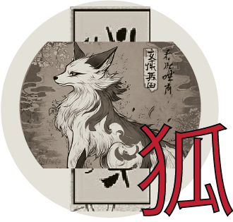
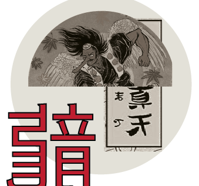
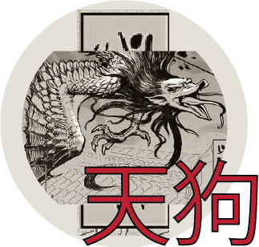
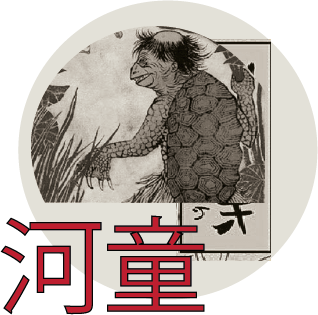

Kitsune

Los kitsune son zorros mágicos dotados de gran
inteligencia, longevidad y poderes sobrenaturales. Son
conocidos por su capacidad de transformarse en humanos,
especialmente en mujeres, y por su habilidad para crear
ilusiones muy convincentes.
A medida que envejecen y se
vuelven más poderosos, pueden desarrollar múltiples colas,
llegando hasta nueve, lo que simboliza su sabiduría y poder.
Tengu

Los tengu son criaturas espirituales que habitan en
montañas y bosques, y suelen representarse como seres
humanoides con rasgos de ave, como alas, garras o una
nariz anormalmente larga.
En sus orígenes eran vistos como
demonios peligrosos, pero con el tiempo su imagen
evolucionó hacia la de guardianes y protectores de la
naturaleza.Son famosos por su dominio de las artes
marciales y la espada, y en algunas leyendas actúan como
maestros que entrenan a guerreros o monjes.
Ryū

El ryū es el dragón japonés, una criatura poderosa asociada
principalmente al agua, como ríos, mares y lluvias. A
diferencia de los dragones occidentales, que suelen ser
destructivos, el ryū es generalmente benevolente, sabio y
protector.
Se lo considera un símbolo de equilibrio natural,
fuerza y conocimiento.Estos dragones tienen cuerpos largos
y serpenteantes, sin alas, pero con la capacidad de volar.
Están vinculados a deidades marinas como Ryūjin, quien
gobierna los océanos.
Kappa

El kappa es una criatura acuática que habita en ríos, lagos y
estanques. Tiene un aspecto peculiar, con rasgos de
tortuga, piel verdosa y un cuenco lleno de agua en la
cabeza, del cual depende su energía vital. Aunque a
menudo se lo describe como travieso y bromista, también
puede ser peligroso.
En algunas leyendas, los kappa atacan
a humanos o animales, especialmente a quienes se acercan
imprudentemente al agua.